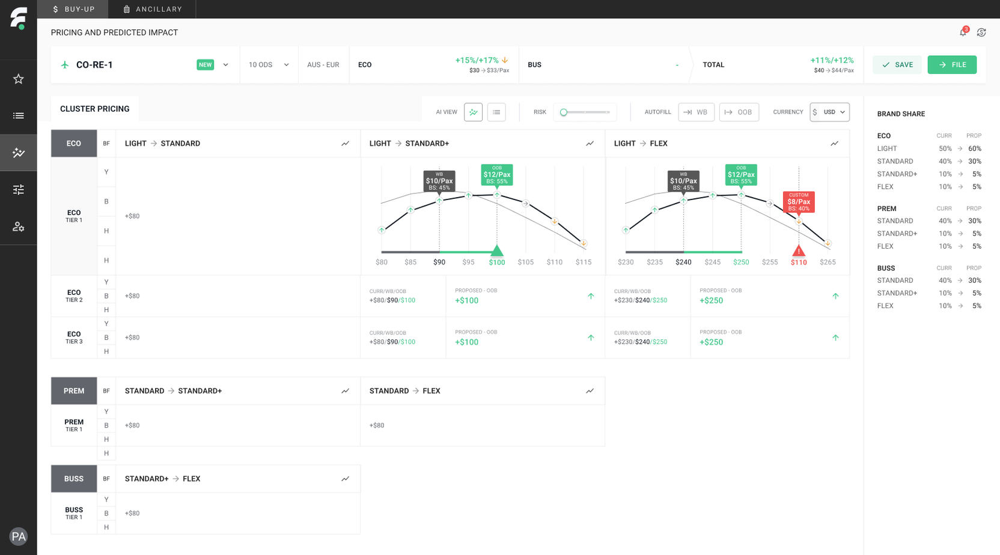

Willingness-to-pay model → interactive $/pax pricing curve

FarePoint
Branded fare and ancillary pricing optimization
Replacing reactive, conservative, local file based fare pricing with proactive, impactful, AI-native workflows, that move the needle for businesses and humans alike.
7% BUR
10% Ancillary Rev.
Case study